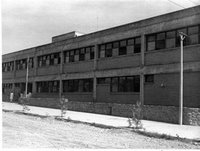

Reseña del Prof. Eduardo Poma El primer Colegio de Nivel Secundario que hubo en Metán surge por iniciativa del entonces párroco José Mir, en 1943. Tenía el carácter de establecimiento privado, con el nombre oficial de Instituto adscripto “José Manuel Estrada” y abarcaba solamente el ciclo básico del viejo sistema, es decir, hasta el 3° año.
